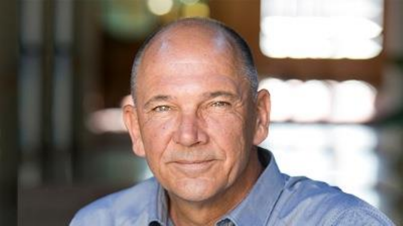

Sound design and system engineering for live sound(concert/touring/festival, special events, corporate, theater, television); fixed installation sound design and commisioning; consulting services for professional audio manufacturers (sound reinforcement product design)
В конце лета 2016 года пришла новость, вызвавшая оживленное обсуждение в кругу специалистов, близких к профессиональному концертному звуку. На должность по развитию продукции для туринга и проката в компанию MUSIC (Music Group) пришел Пол Бауман. Вызванный этим событием резонанс не удивителен, так как за свою более чем 30-летнюю деятельность Пол Бауман успел поработать в таких крупных и знаковых на рынке компаниях, как Adamson, L-Acoustics и JBL, и не просто поработать как один из эффективных менеджеров, а как человек, причастный к разработке флагманских продуктов, обеспечивших успех данных компаний на рынке. Но обо все по порядку.
 Пол БауманСвою деятельность Пол начинал с сугубо научной работы как физик, занимавшийся вопросами теории антенных систем, физическим моделированием и дизайном монолитных СВЧ-микросхем. Именно этому посвящены его первые работы молодого бакалавра по физике. Но буквально через несколько лет Пол переключается на исследовательские направления, связанные с акустикой, и в 1983 году становится магистром по физике за исследования в области цифровой обработки сигнала звуковых отражений с помощью современных математических методов свертки и кепстрального (Cepstrum) анализа. Параллельно начинается активная практическая деятельность – в том же году он принимает участие в разработке акустических систем JBL по спецификации Lucas THX.
Первым серьезным начинанием Пола Баумана можно считать партнерское участие в 1991 году в развитии бренда Adamson, где он являлся не только инженером и разработчиком, но и совладельцем 30% компании. Через 3 года Пол перешел на работу в крупнейшую прокатную компанию Соединенных Штатов Maryland Sound International. За 4 года, проведенные там в качестве директора по исследованиям и разработке заказных продуктов, Пол получил неоценимый опыт в качестве системного инженера при проведении крупнейших туров и фестивалей.
Полностью все таланты Пола Баумана смогли реализоваться с его приходом в 1998 году в компанию L-Acoustics, где он возглавлял отдел технической поддержки, а затем отдел исследований и разработки. Под его началом сформировался облик продуктовой линейки L-Acoustics таким, как мы его знаем сейчас. Из реализованных проектов можно перечислить флагманские системы V-DOSC, dV-DOSC, KUDO, ARCS, 115XT-HiQ, участие в разработке программного обеспечения Soundvision, подготовку пресетов для всей линейки акустических систем компании, налаживание партнерских отношений с Lab Gruppen в качестве поставщика усилителей по спецификациям L-Acoustics.
Следующая значимая веха – это переход в 2006 году в крупнейшую мировую корпорацию Harman Professional, где он возглавил подразделение продукции для туров и инженерных решений. Здесь Пол делает серьезный вклад в развитие бренда JBL. Под его руководством выпускаются такие всемирно известные серии как Vertec, VRX, VTX, разрабатываются готовые решения на акустике JBL и усилении Crown, активно совершенствуется протокол управления HiQnet, при этом Пол является одним из авторов патентов на внешний облик новых линейных массивов, а также на интерфейс программного обеспечения и алгоритмы управления звуковым оборудованием
И вот, с сентября 2016 года Пол Бауман переходит в корпорацию Music Group, имеющую в своем портфеле, такие бренды как Tannoy, Turbosound и Lab Gruppen. Бренды, безусловно, легендарные, но нуждающиеся в новом импульсе для дальнейшего развития. Разумеется, теперь руководство Music Group делает ставку в этом вопросе на Пола, имеющего огромный опыт и обладающего не только теоретическими знаниями, но и прекрасно знакомого со всеми современными тенденциями на рынке.
С июля 2019 по апрель 2020 работал в Director of Engineering. С мая 2020 года Пола Бауман основал свою компанию PdB Sound Design Associates, которая предлагает следующие услуги:
- Звуковой дизайн и системная инженерия для живого озвучивания (концерт/гастроль/фестиваль, специальные мероприятия, корпоратив, театр, телевидение)
- Звуковой дизайн, установка и ввод систем в эксплуатацию фиксированных инстоляций
- Консультационные услуги для профессиональных производителей аудиотехники (дизайн продукции звукоусиления)
Наша компания «Туринг Эксперт» имеет давние дружественные связи с Полом Бауманом и готова предложить его услуги (ведущего мирового про-аудио инженера) для разработки престижных проектов.